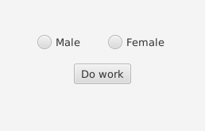

بسم الله الرحمن الرحيم
الأزرار الشرطية Radio Buttons
الأزرار الشرطية هي الأزرار التي يمكن اختيار واحد منها في الحالة الواحدة فقط ولا يجوز اختيار أكثر من خيار واحد بنفس الوقت.
للقيام بعمل radio button علينا أولاً سحبه من الـSceneBuilder إلى مكانه المناسب , نستطيع سحبه من قائمةControls نجد أن اسمه Radio Button أنظر للصور التالية..
نستطيع إعادة تسمية الزر من خلال الضغط عليه مرتين بشكل متتالي بالماوس أو من خلال لائحة Properties الموجودة على اليمين .
ويجب علينا أن نضع id خاص لكل زر شرطي (Radio Button) وذلك لنتمكن من فحصه لاحقاً بالكود إذا تم اختياره أم لا ونقوم بوضع id له من خلال لائحة Code على اليمين كما يلي..
ملاحظة: نقوم بذلك لكلا الزرين الشرطيين
والآن نذهب إلى الـController من ونقوم بتعريف الأزرار الشرطية المراد التعامل معها بنفس الـid من النوع RadioButton.
يمكننا معرفة إذا كان الزر تم اختياره أم لا من خلال استخدام دالة isSelected

والآن ماذا لو قام المستخدم باختيار الزرين بنفس الوقت ؟ كيف يمكننا منعه من ذلك ؟
نقوم بإستخدام الـButton Group وهي ربط أكثر من زر شرطي معاً بحيث لا يمكن اختيار إلا زر واحد في المرة الواحدة حتى لا تحدث مشكلة كهذه (أنظر للصورة التالية)
نقوم بذلك باستخدام SceneBuilder نضغط على الـRadioButton لنستطيع تعديل الخصائص ثم نعدل الخاصية ToggleGroup الموجودة في لائحة Properties على اليمين.
يجب أن يكون لكلا الزرين الشرطيين نفس اسم الـToggle Group لكي يتم ربطهم مع بعضهما بحيث لا يمكن الضغط عليهما بنفس الوقت فحين يتم اختيار أي خيار منهم سيتم تلقائياً إزالة الخيار الآخر.
للمزيد قم بالرجوع للصفحة الرئيسية
والسلام عليكم ورحمة الله وبركاته
لا تنسونا من صالح دعائكم